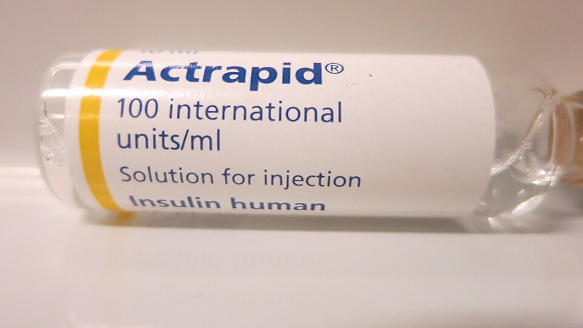
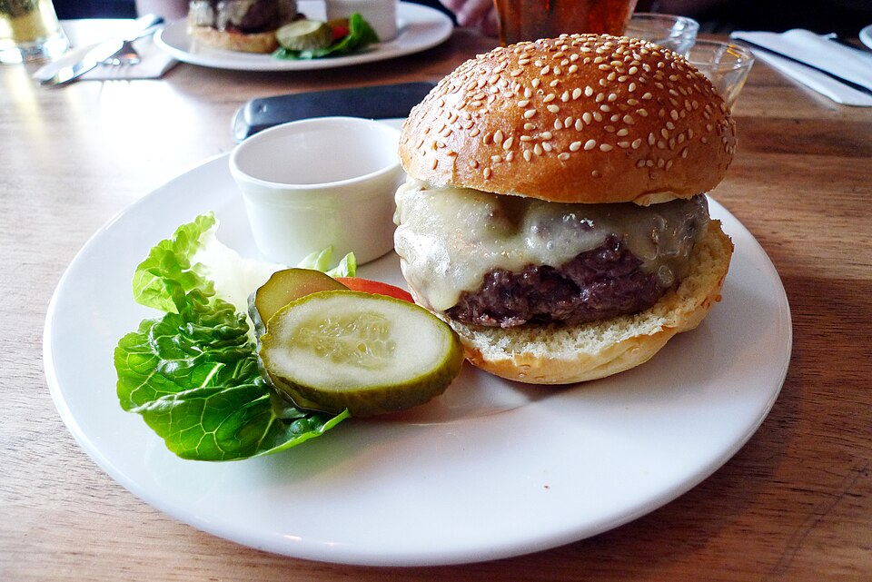
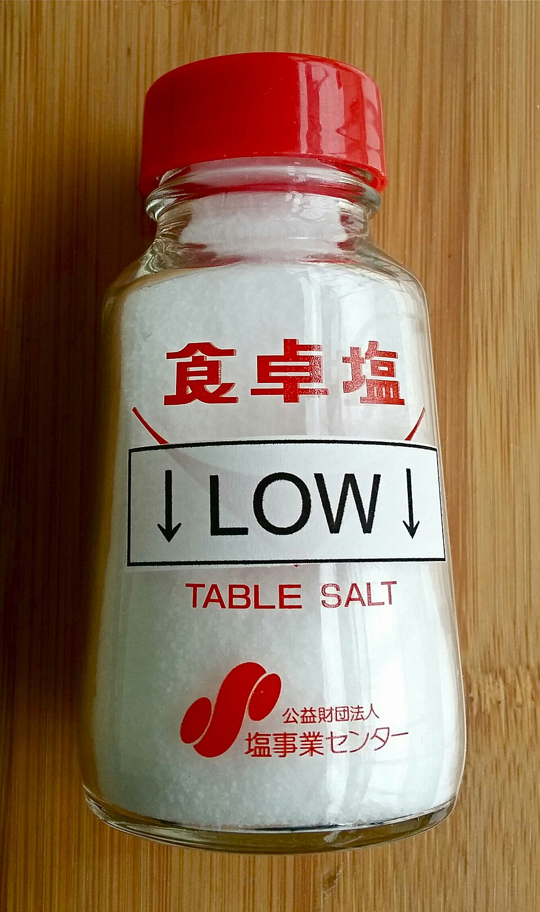
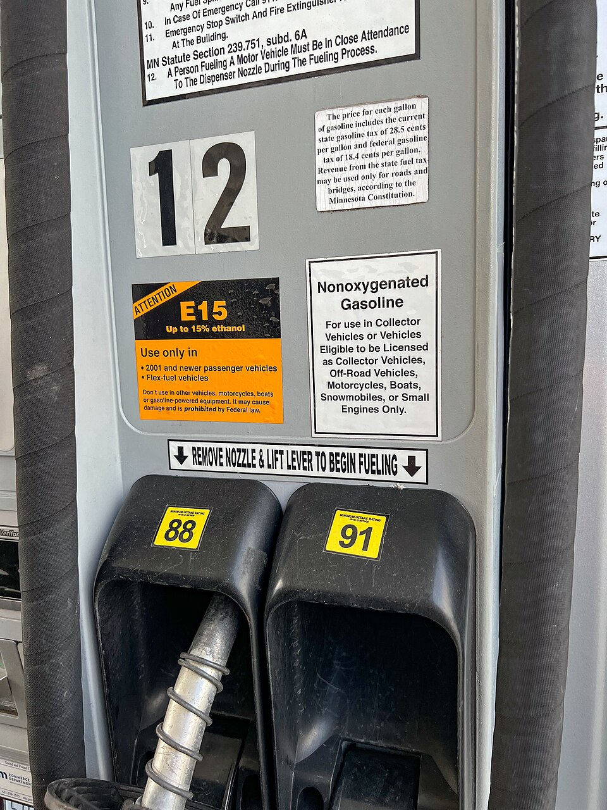
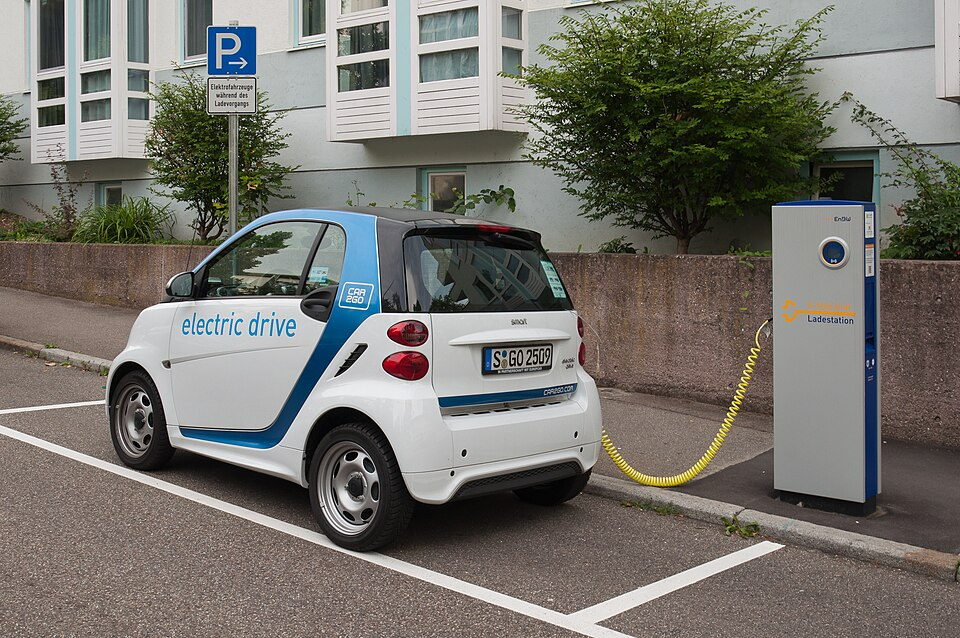

Elasticity
How much? Measuring responsiveness
Unit 6 in nine objectives
Today (Class 1): LO 6.1–6.4, the demand side. Wednesday (Class 2): LO 6.5–6.9.
A slice of pizza on campus goes up 20%

$3.00 → $3.60
Over the next month, how many fewer slices would you buy?
Hands up for each one. Remember roughly where the room lands—the next question is the same price change on a different good.
Gasoline at your station goes up 20%

$3.00 → $3.60
Over the next month, how many fewer gallons would you buy?
Exactly the same percentage increase, over exactly the same month. Any difference in the room is about the two goods, not about the price change.
Same 20% increase, two different worlds
Pizza
Lots of close alternatives within a five-minute walk.
Most hands moved down the list, so quantity falls a lot.
Buyers had somewhere else to go, and they went.
Gasoline
Same commute, same car, same month.
Most hands stayed at the top, so buyers pay more and buy almost the same amount.
Buyers had nowhere else to go, so they simply paid.
Direction is not the same as size
Which way?
The law of demand, from Unit 4.
price ↑ ⇒ quantity demanded ↓
True for pizza. True for gasoline. True for every good on the list.
How much?
A rounding error, or a collapse?
quantity demanded ↓ by ???
The law of demand is completely silent here—and this is the half that decides every real decision.
North Carolina grows more sweet potatoes than any other state
A near-perfect growing season means NC farms harvest 25% more sweet potatoes than usual, at every price they could have charged.
Good news
More to sell means more income for NC sweet potato farmers.
Bad news
Farmers end up with less income than in a normal year.
It depends
On something we have not learned yet.
Elasticity measures how responsive one thing is to another
It is a ratio
Two percentages divided by each other. The answer carries no units—not dollars, not pounds.
It is a movement along a curve
Price changed; the curve did not move. This is the Unit 4 language rule again.
It is local
It describes one stretch of the demand curve, not the whole curve. More on that shortly.
Percentages let you compare markets that have nothing in common
Hard to use
“A $1,000 cut in the price of a Ford sells 30,000 more cars.”
Is that a big response? You cannot say without knowing the price of a Ford and how many Fords are normally sold.
Easy to use
“A 5% cut in the price of a Ford raises Ford sales 20%.”
Ed = 20 ÷ 5 = 4. Now it can be compared with anything.
Every price elasticity of demand is negative. We report it anyway.
Why it is negative
Along a demand curve, price and quantity always move in opposite directions. The ratio is always below zero.
Our class convention
Report the absolute value: write 0.45, not −0.45. Either is accepted on an exam—the interpretation must be right.
Translate each number into a sentence that starts “A 10% price increase would…”
If you can say the sentence, you understand the number. If you can only say “demand is elastic,” you do not yet.
A percentage has to ask: compared to what?
A price goes $10 → $20, then back $20 → $10. Ask the room: are those the same percentage change?
Going up: the $10 gap ÷ $10 = 100%. You divided by the small end.
Coming back: the $10 gap ÷ $20 = 50%. You divided by the big end.
At $12 buyers want 700 flats; at $16 they want 500. Going up gives |Ed| = 0.86, inelastic. Coming back gives |Ed| = 1.60, elastic. Same two points, opposite conclusions.
Same arithmetic in a costume you have seen: a 50% off sale has to be followed by a 100% increase just to get back to the original price.
The midpoint method uses the average as the base, so direction stops mattering
The same formula is called arc elasticity in other textbooks—it is the same calculation.
Compare the number to one. That is the whole classification.
| Value of |Ed| | Name | What it means in words |
|---|---|---|
| > 1 | Elastic | Quantity responds more than proportionally. A 10% price rise cuts quantity by more than 10%. |
| < 1 | Inelastic | Quantity responds less than proportionally. It still responds—just not by much. |
| = 1 | Unit elastic | Quantity and price move by the same percentage. |
| = 0 | Perfectly inelastic | Quantity does not change at all. The demand curve is vertical. |
| → ∞ | Perfectly elastic | Any price increase drives quantity to zero. The demand curve is horizontal. |
Perfectly inelastic: the quantity does not move at all

Photo: John Campbell · CC0. Nothing is exactly vertical in reality; at some price a patient is forced to ration. But this is the closest real demand comes, and it is why insulin pricing became a policy fight. We return to it on Wednesday.
Perfectly elastic: one penny more and you sell nothing

Do not confuse the two. Demand for soybeans as a whole market slopes down normally. What is flat here is the demand curve facing one seller. That distinction is the foundation of perfect competition later in this course.
Same slope, same step—and a sixteen-fold difference in elasticity
Both triangles are the same size: 20 units across, $20 down. The slope is −1 in both places.
Up top Q: 10→30 P: $90→$70
%ΔQ = 20 ÷ 20 = 100%
%ΔP = $20 ÷ $80 = 25%
|Ed| = 4.0
Down low Q: 70→90 P: $30→$10
%ΔQ = 20 ÷ 80 = 25%
%ΔP = $20 ÷ $20 = 100%
|Ed| = 0.25
The same lesson as the $10↔$20 slide: 20 units is 100% of a base of 20, but only 25% of a base of 80. The step never changed. The base did.
A bargain up top, a disaster down low
Put yourself on the selling side. In both cases you cut the price by $20 and you win 20 new customers—identical numbers. Look at what they are worth.
At the top
P = $90 · you have 10 buyers
A modest slice off a $90 price. You still keep $70 of it.
New buyers—when you only had 10. You just tripled your business.
At the bottom
P = $30 · you have 70 buyers
Two-thirds of a $30 price. You are left with $10.
The same new buyers—but you already had 70. Barely a dent.
Hold on to this slide: it is also why total revenue rises when you cut the price up top and falls when you cut it down low—where we go next.
Two demand curves cross. Which one is more elastic there?
At the crossing point both curves have the same price and the same quantity. Only one thing differs.
Rule of thumb, true only at a shared point: flatter is more elastic. It is not a rule about whole curves.
Now compute one yourself
Price rises from $3.00 to $3.60 per gallon. A typical student's purchases fall from 1,000 to 950 gallons per year.
Before we reveal anything: is this elastic or inelastic? Commit to an answer.
Why is one 1.17 and the other 0.28?
Strawberries 1.17
In June there are blueberries, peaches, frozen berries, and the farm down the road. Skipping strawberries this week costs you almost nothing.
Gasoline 0.28
Same car, same commute, same month. There is no close substitute available to you between now and Friday.
Next: substitutes · necessity or luxury · share of income · time horizon.
How many other things would do just as well?
NASA · public domain
inelasticThe Hubble telescope
There is exactly one, and nothing else does the job. Raise its cost and the quantity anyone wants does not budge.

Ewan Munro · CC BY-SA 2.0
elasticA cheeseburger
Dozens of near-identical options within a five-minute walk. Raise the price and buyers simply pick another one.
Can the purchase simply be skipped?
John Campbell · CC0
inelasticInsulin
The dose is set by the body, not by the budget. It gets bought this month whatever it costs.
Marc Ryckaert · CC BY 4.0
elasticA Caribbean cruise
It can wait until next year, or never happen at all. A price rise is easy to answer with “not this time.”
Is it even worth shopping around over?

Susan Slater · CC BY-SA 4.0
inelasticTable salt
A few dollars a year. If the price doubled you might not notice—and you certainly would not drive across town to save forty cents.
Pava · CC BY-SA 3.0 IT
elasticA new car
Months of income. A 20% difference is thousands of dollars, so buyers compare, wait, negotiate, and walk away.
How long does the buyer have to adjust?

Tony Webster · CC BY 2.0
inelasticGasoline, this month
Same car, same commute, same house. There is almost nothing you can change by Friday, so you pay and drive.

Julian Herzog · CC BY 4.0
elasticGasoline, over ten years
Different vehicle, different job, different home. Substitutes appear that simply did not exist for you this week.
This is the determinant students forget, and it decides Wednesday’s tax question: the longer a tax stays in place, the smaller the share buyers end up bearing.
The four determinants can point in opposite directions
Apply the determinants to housing and you get a contradiction.
Says elastic
Share of income: housing is the largest single item in most household budgets. That argues for a large response.
Says inelastic
Necessity, few substitutes: you have to live somewhere, and moving is expensive and slow.
So use the determinants to reason, not to conclude. They tell you which forces are at work and which way each one pushes. Which force dominates is an empirical question, settled by data, not by argument. exam tip A question that gives you one determinant expects one direction; a question that gives you two conflicting ones is asking you to notice the conflict.
Order these from most elastic to least elastic
Use the four determinants. Argue for your ordering before anything is revealed.
(adult smokers)?published estimate
(one month)?our class example
1 · Substitutes
What else could this buyer use instead?
2 · Necessity?
Can the purchase simply be skipped?
3 · Budget share
Is it worth shopping around over?
4 · Time
How long does the buyer have to adjust?
Two of these five are close together. When you get there, say why gasoline and cigarettes land in nearly the same place.
If you raise the price, does your revenue go up or down?
Raising the price sets two forces against each other:
Price effect ↑
Every unit you still sell now earns more. This raises revenue.
Quantity effect ↓
By the law of demand you sell fewer units. This lowers revenue.
Same $4 increase, opposite revenue outcomes
Inelastic demand
$10 → $14 · Q falls 100 → 92
Elastic demand
$10 → $14 · Q falls 100 → 60
| Demand at that price | Raise the price | Lower the price |
|---|---|---|
| Elastic |E| > 1 | TR falls ↓ | TR rises ↑ |
| Inelastic |E| < 1 | TR rises ↑ | TR falls ↓ |
| Unit elastic |E| = 1 | TR unchanged | TR unchanged |
Revenue peaks exactly where demand turns unit elastic
Demand
Total revenue = P × Q
Above the midpoint
Demand is elastic, so cutting the price raises revenue. Move right.
At the midpoint
Unit elastic. Revenue is at its peak; no price move improves it.
Below the midpoint
Demand is inelastic, so raising the price raises revenue. Move left.
Netflix raised its price about 60%. Did revenue rise?
Keeping both streaming and DVDs went from about $10 to $15.98 a month. U.S. subscribers fell from 24.6 million to 23.79 million—810,000 cancellations.
And yet
Over the following year the company's share price fell from about $300 to just under $54.
The elasticity you measure this quarter is not the elasticity you will face in three years. Vudu, Amazon Prime, Hulu and Redbox were all becoming close substitutes. Determinant 1 and determinant 4, working together.
One problem, four questions
Price rises from $100 to $150. Quantity demanded falls from 1,200 to 900 pairs.
Three things to take away, one question still open
1 · It is a ratio of percentages
Unit-free, so any two markets can be compared. Always report what it means in a sentence, not just a number.
2 · Use the midpoint method
Average quantity and average price as the bases. Then the answer is the same going up or going down.
3 · Compare to one
Above one, a price increase cuts revenue. Below one, a price increase raises it. That single comparison drives the whole unit.
Wednesday: price elasticity of supply, cross-price and income elasticity, who really pays a gas tax—and the sweet potato answer.
One question from Monday is still on the board
NC farms harvest 25% more sweet potatoes than usual. Good news or bad news for NC sweet potato farmers?
What you already have
The midpoint method, the classification, and the revenue rule.
What is missing
A bumper crop is a supply event. We have only measured the demand side.
Today
Supply elasticity first, then taxes, then the answer.
Keep Monday's class vote visible. We compare it to the answer in about thirty-five minutes.
One problem, from memory
Price rises from $20 to $25. Quantity demanded falls from 400 to 300.
Find |Ed|, classify it, then predict what happens to total revenue before you multiply.
If the rule and your arithmetic ever disagree, one of them is wrong—check both before moving on.
Sellers respond to price too—and we measure it the same way
Always positive
Along a supply curve, price and quantity move the same direction. No absolute value needed.
Same thresholds
Above 1 is elastic, below 1 is inelastic, exactly as on the demand side.
Same midpoint method
Average quantity and average price as the bases. Nothing new to memorize.
%ΔQ = 3,000 ÷ 11,500 = 26.1% · %ΔP = $50 ÷ $675 = 7.4% → Es ≈ 3.5, elastic.
How fast can the seller actually make more of it?
Nearly perfectly inelastic
- Land on Manhattan. No price makes more of it.
- The Mona Lisa. Quantity is one, permanently.
- Beachfront property. The coastline is what it is.
A price increase brings in no additional quantity—only a higher price.
Highly elastic
- Budweiser in a small town. More trucks arrive tomorrow.
- Bread, pencils, books. Inputs are ordinary and available.
A small price increase pulls in a large additional quantity, because production can simply be expanded.
Spare capacity is cheap. Building new capacity is not.
Below capacity
Firms run an extra shift or use idle equipment. A small price increase buys a lot of extra output.
At capacity
Producing more now means building a new plant, clearing new ground, or planting new trees. The price has to rise a lot to justify that.
Why supply is always more elastic given more time
the crop is already in the ground
switch acreage: corn ↔ soybeans ↔ cotton
new orchards, new entrants, new land
Short run
Supply is steep. The same demand increase shows up mostly as a higher price.
Long run
Supply is flat. The same demand increase shows up mostly as a larger quantity.
Why roses spike on Valentine's Day and chocolate barely moves
Roses
Demand surges for one day. Roses cannot be stored—they have to be growing in a greenhouse months earlier.
Supply is inelastic → the surge lands almost entirely on price.
Chocolate
Demand surges by a similar amount. Chocolate stores well, so producers simply build inventory in advance.
Supply is elastic → the surge lands mostly on quantity.
The same supply shock, against two different demand curves
In 1973 OPEC cut oil exports to the United States. Crude was $12 a barrel and the U.S. used 17 million barrels a day. Both panels show the identical leftward supply shift.
Inelastic demand — the short run
What actually happened in 1973–75.
Elastic demand — the long run
What the same shock would have done with more adjustment time.
By 1983 U.S. petroleum use was 15.3 million barrels a day—below 1973, despite an economy about a quarter larger. A decade of adjustment had made demand more elastic.
Income elasticity puts a number on a Unit 4 idea
Positive E > 0
Normal good. Income rises, you buy more. In Unit 4 language: the demand curve shifts right.
Negative E < 0
Inferior good. Income rises, you buy less—you trade up to something else. The demand curve shifts left.
Notice what the sign is doing: it is not measuring how nice the product is. It is measuring which direction the demand curve moves when incomes change.
Cross-price elasticity does the same job for related goods
Positive E > 0
Substitutes. Beef gets more expensive, so people buy more chicken.
Price of one up → quantity of the other up. Same direction, positive sign.
Negative E < 0
Complements. Gasoline gets more expensive, so people buy fewer pickup trucks.
Price of one up → quantity of the other down. Opposite directions, negative sign.
Unit 4 told you which way the curve moves. Now you can say how far.
| Unit 4 said | Unit 6 adds | The measure |
|---|---|---|
| Income up → normal good demand shifts right | How far right depends on the size of the number | Income elasticity |
| Substitute's price up → demand shifts right | How far right depends on how close a substitute it is | Cross-price elasticity |
| Own price up → move along the curve | How far along depends on the four determinants | Price elasticity |
Friday's review session has the sign-identification practice. Bring the three formulas.
Every gallon of gas carries a tax. Who actually pays it?
Federal and North Carolina motor fuels taxes are collected from the supplier, not from you at the pump. No line on your receipt says “tax.”
Vote before we draw anything. Of each dollar of gasoline tax, who ends up worse off by more?
Remember Monday's number: the price elasticity of gasoline demand over a month came out at 0.28.
You can draw a tax two ways. They give identical answers.
Way 1 · shift the supply curve
A $1 tax is a $1 addition to the seller's cost of every unit, so supply shifts up by exactly $1.
Way 2 · drive a wedge
Leave both curves alone. Find the quantity where the vertical gap between them is exactly $1.
Your textbook draws it the same way—the supply shift is left out there too, for the same reason.
A $1.00 tax does not raise the price by $1.00
Numbers chosen for illustration; they are not current federal or North Carolina rates.
Who writes the check does not determine who bears the burden
Tax the seller $1.00
Supply shifts up by $1.00. The market price becomes $3.80.
- Buyers pay $3.80
- Sellers collect $3.80, remit $1.00, keep $2.80
- Quantity: 75 million
Tax the buyer $1.00
Demand shifts down by $1.00. The market price becomes $2.80.
- Buyers pay $2.80 plus $1.00 tax = $3.80
- Sellers keep $2.80
- Quantity: 75 million
So “we will tax the oil companies, not drivers” is a claim about the wrong kind of incidence.
The more inelastic side of the market bears more of the tax
If supply is more inelastic than demand, sellers bear most of the burden.
escape routes
has nowhere to go
the tax
Gasoline, one month
Buyers cannot change car, commute, or home by Friday. Sellers can redirect fuel to other markets. Buyers are the trapped side.
The same tax over ten years
Buyers get a more efficient car, move closer to work, change jobs. The trapped side becomes less trapped, and the buyers' share falls.
Flip which side is trapped and the burden flips with it
Inelastic demand, elastic supply
Gasoline. Buyers have no short-run alternative; sellers do.
Elastic demand, inelastic supply
Beachfront hotel rooms, or prime farmland. Sellers cannot move; buyers can vacation elsewhere.
Identical $1.00 tax. Identical arithmetic. The only thing that changed is which side had somewhere else to go.
Two excise taxes. Predict who bears each one.
A · Cigarettes
A new tax on cigarette manufacturers. Adult smokers' demand elasticity is about 0.3. Producers can adjust output freely.
B · Restaurant meals
A new tax on restaurants. Demand elasticity is about 2.27—diners can cook at home. Restaurants have limited ability to exit quickly.
Revenue collected, and trades destroyed
Revenue = tax × Qtraded
$1.00 × 75 million = $75 million. A transfer—it moves from buyers and sellers to the government, and nothing is destroyed.
Deadweight loss
The 15 million gallons between 75 and 90 were worth more to buyers than they cost sellers. Those trades no longer happen, and nobody gets that surplus—not even the government.
Corollary: the more inelastic both sides are, the smaller the deadweight loss and the larger the revenue. That is the efficiency case for taxing inelastic goods—and it collides with the fairness case, since inelastic goods are often necessities.
Good news for yields, bad news for revenue
Compare this with the class vote still on the board from Monday. illustrative Price and quantity figures are constructed for the example, not measured NC data.
If the good harvest hurts farmers, why plant the higher-yield variety?
For one farm
A single NC farm is a price taker: it is far too small to move the market price of sweet potatoes.
So from its own point of view the market price is simply given, and producing more at that price is unambiguously better.
Planting the better variety is the right decision.
For all farms together
When every farm reasons that way, total supply shifts right—and now the price does move.
With inelastic demand the price falls more, in percentage terms, than quantity rises.
Every farm is worse off than before.
You saw one of those instruments in Unit 5: a crop price support, with the government buying the surplus. Now you can explain why farmers ask for it.
“Pricing power” is just another name for inelastic demand
necessity, small budget share
in the relevant range
raises revenue
The test, stated precisely
When a firm raises prices, ask: did quantity fall enough to cut revenue?
- Revenue rose → demand was inelastic there
- Revenue fell → demand was elastic, and the firm misjudged
Netflix, 2011
A 46% price increase cost only 3.3% of subscribers. |E| ≈ 0.07 → revenue rose sharply. The firm had pricing power at that moment.
What it did not have was pricing power in five years, once substitutes arrived.
A patent works by removing the buyer's substitutes
Under patent
- No close substitutes — by law, no one else may make it
- A necessity — for the patient who needs it, not optional
- Short horizon — a sick patient cannot wait for alternatives
Three of the four determinants point the same way. Demand is extremely inelastic, and price can be set far above production cost.
After generic entry
- Close substitutes appear — chemically equivalent, different label
- Pharmacists and insurers substitute automatically
Determinant 1 flips. The same molecule, for the same patients, now faces elastic demand—and the price falls sharply.
This is also why drug pricing debates are really debates about the determinants: patent length, generic approval speed, importation, and insurance design all work by changing substitutes.
Six moves complete the unit
(a) Who bears more, and why? (b) Much or little revenue? (c) After ten years, is the buyers' share bigger or smaller?
(a) Buyers—they are the more inelastic side, so they have the fewest ways to escape the tax. (b) A lot of revenue, because inelastic demand means quantity barely falls, and revenue is tax × quantity traded. (c) Smaller. Over ten years buyers find substitutes—different vehicles, homes, commutes—so demand becomes more elastic and the burden shifts toward sellers.